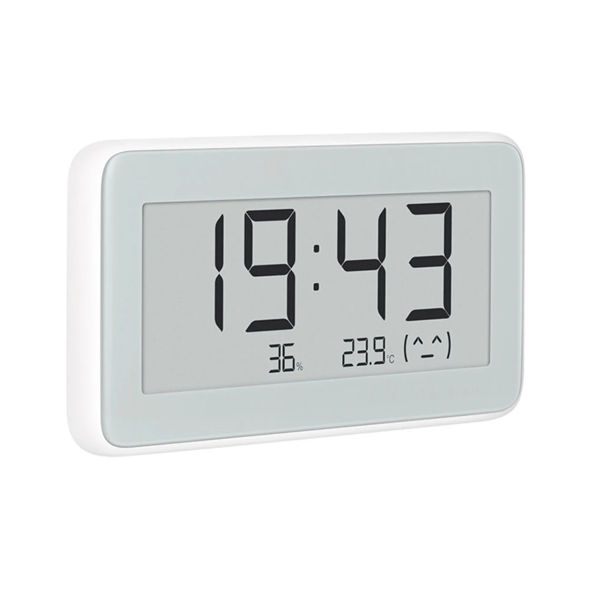

温度
--LYWSD02 BLE Dashboard
请在电脑上继续
请使用支持蓝牙的 Windows、Mac 或 Linux 电脑连接传感器。
- 1
打开 Chrome、Edge 或其他 Chromium 浏览器。
- 2
访问同一网址。
- 3
开启蓝牙，然后连接 LYWSD02。
drslid.github.io/LYWSD02_BLE_Dashboard/
本地连接，无需账户，传感器数据不会发送到服务器。
自动化
用 Home Assistant 让每个时钟保持准确
免费的 LYWSD02 Clock Sync 集成每晚自动校准时钟，跟随夏令时切换，并添加“同步时钟”按钮。无需 YAML，无需云服务。
在 HACS 中打开
同步、调校并充分使用你的 Xiaomi Mijia LYWSD02。
查看实时测量，修正时钟偏差，并读取传感器内部保存的记录。
- 温度 · 湿度 · 电量
- 同步时钟
时钟偏差超过 10 秒时自动校正
- 时间格式 · 12/24 h
温度单位 · °C/°F - 每小时历史
导出 CSV 历史
- 有多个 LYWSD02？
每个传感器连接一次并设置本地名称。浏览器 ID 和最近连接时间会保存在这台电脑上。